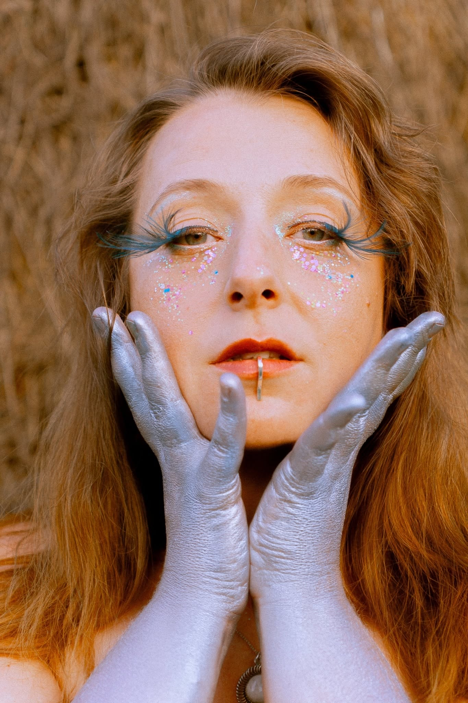
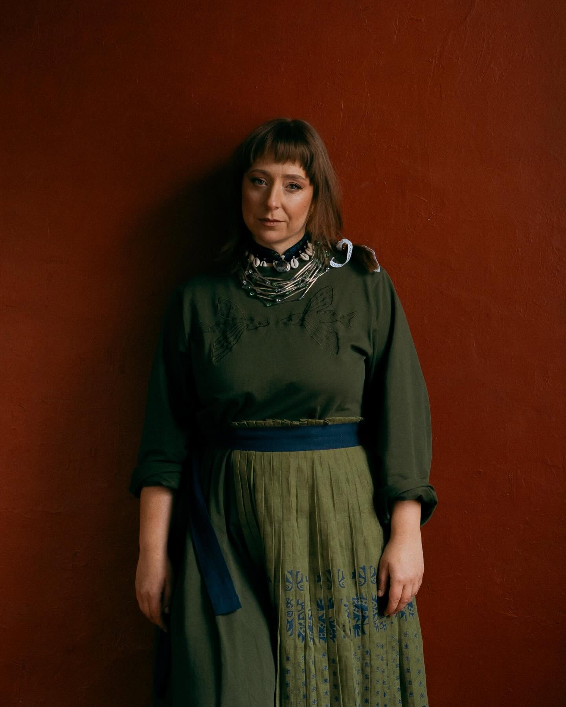
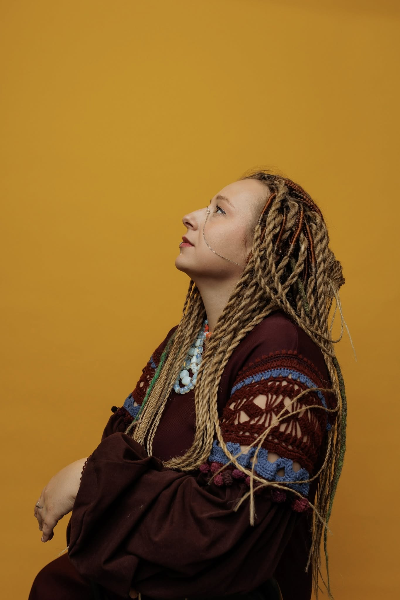
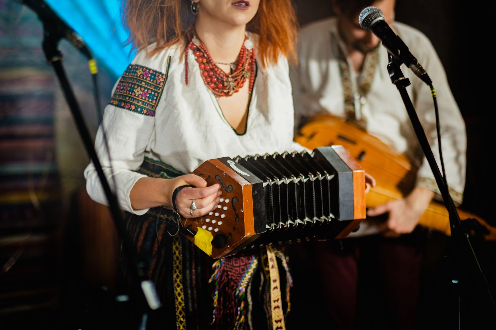
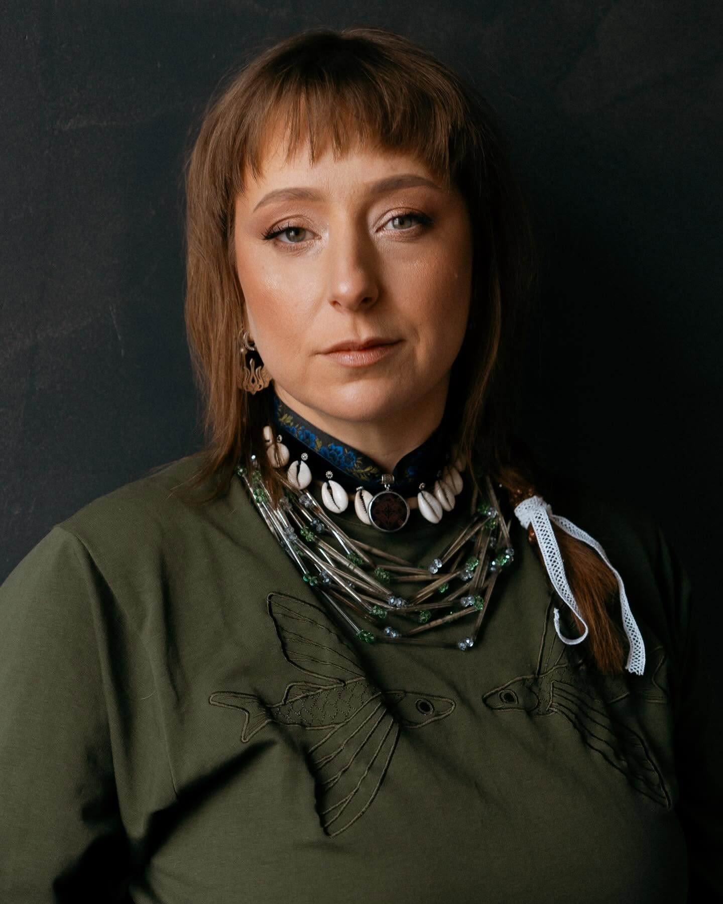
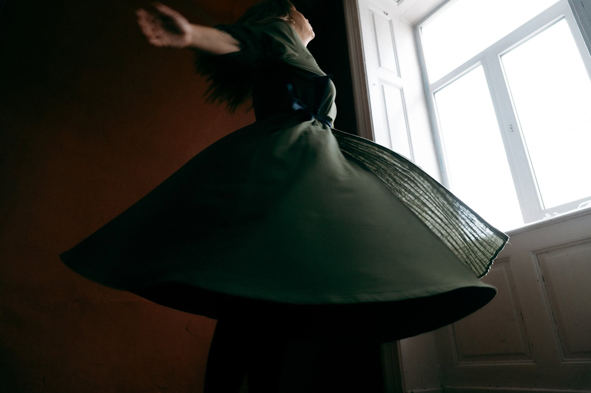

Marichka
Chichkova.
Chichkova

Photo reference: 24 Kanal, 2025 · Rights not cleared
Songs passed
from voice to voice.
Marichka Chichkova sings and shares Ukrainian traditional music. Songs learned from others find their way into her performances, teaching, theatre work and musical collaborations.
For her, a song is something people share. It lives when someone remembers it, learns it and sings it again — alone or together.
Marichka also plays instruments, arranges music and composes for theatre. And she helps bring people together through singing workshops, concerts, festivals and independent music spaces in Lviv.


Songs, voices
& encounters.

Співмайстерня
Voice / Teaching / Since 2020 ↗We_selo
Traditional polyphony / Since 2020 ↗Slavalachia
Music / Since 2019 ↗Torbán
Music / 2017–2021 ↗Вертеп
Theatre / 2022 ↗CYCLES
Performance / 2021 ↗
Images are editorial references only. Project-specific imagery and permissions are pending.
Where songs
bring us together.
Some songs are sung on stage. Others begin around a table, at a workshop or among friends. Marichka helps create occasions for both — from shared singing to music festivals and small concert spaces.
